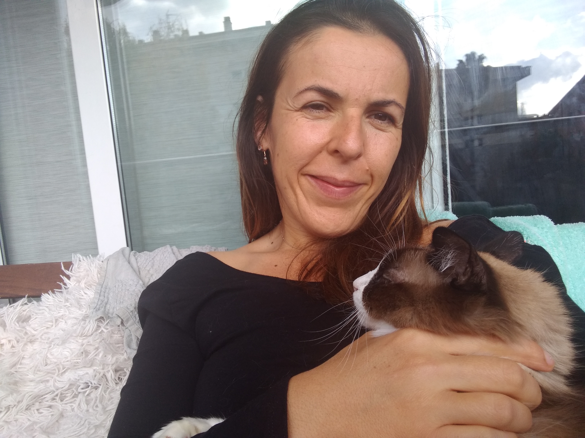

Quien soy
Portuguesa nativa, en Barcelona hace 5 años. Tengo dos hijas y me gustan los gatos.

EDUCACIÓN
- Grado en Comunicación Social
- Estudiante en Master Marketing Digital
Habilidades
- Buena capacidad de comunicación
- Inteligencia emocional
- Pensamiento crítico
- Trabajo en equipo
- Gestión del tiempo
- Persistencia y constancia
- Organización
- Adaptabilidad
- Empatía y optimismo
- Resolución de conflictos
Intereses
- Deporte
- Ecrita Criativa
- Webinars
- Leer y mucho más